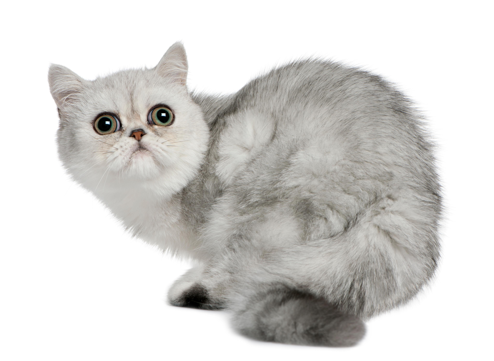

Provienen del cruce entre persas con americanos o británicos de pelo corto. Esta hibridación ha dado lugar a una raza que alcanzó la fama en las décadas de los 60 y los 70.
La cabeza del gato exótico de pelo corto es chata y aplanada, no sobresaliendo su hocico y presentando un cráneo bastante ancho, con una nariz corta y ancha, de orificios grandes y abiertos. Su cabeza, al igual que su frente, orejas y ojos, es redondeada. Sus ojos son de un color intenso y puro, normalmente de un colorido acorde al de su pelaje. Por ejemplo, suelen ser dorados o cobre, salvo en las variedades golden chinchilla, puesto que los ejemplares que tienen este tono de manto presentan unos ojos verdes, o en los gatos colourpoint o blanco, que tienen ojos azules, su peso oscila entre los 3 y los 6 kilogramos. Sus patas son cortas y al igual que el resto del cuerpo son anchas y robustas, con una marcada musculatura. Su cola es corta, redondeada y gruesa.

Considerada como la raza felina más familiar y cariñosa. Quizá sea por esto que la soledad le resulta altamente desoladora, afectando tan negativamente que puede provocar diversas enfermedades. Debido a este rasgo del carácter y la personalidad del gato exótico de pelo corto, es crucial enseñarle a gestionar la soledad, se trata de un felino tranquilo y muy dócil, por lo que no será difícil educarlo e incluso conseguir que aprenda algunos trucos. Así mismo, es un felino inteligente, fiel y, en general, de fácil convivencia.

Sigue necesitando ser cepillado para evitar bolas de pelo, además de que así no llenará nuestros muebles y ropa con el pelo que desprende. Para ello, necesitaremos un cepillo adecuado al largo y características de su manto. Así, el cepillado será un momento placentero para nuestra mascota, que lucirá un pelaje bonito y lustroso. A su vez, han de realizarse desparasitaciones tanto internas como externas, especialmente en aquellos animales con acceso al exterior o que han sido adoptados recientemente. Así evitaremos y acabaremos con infestaciones que pueden acarrear muchos problemas de salud a nuestro querido gatito exótico de pelo corto. Además, como en todas las razas, ha de cuidarse la alimentación y proporcionarle una dieta adecuada y balanceada para conseguir que nuestro felino esté sano y fuerte, así como proporcionar un adecuado enriquecimiento ambiental, con juguetes y rascadores.

Suele ser sano y robusto, sin embargo, no deben pasarse por alto diferentes cuestiones respecto a su salud. Debido a que su hocico es chato y corto, los exóticos pueden presentar alteraciones respiratorias propias de las razas de cara corta, no obstante, el número de casos es sensiblemente menor que en el de sus predecesores los persas. El lagrimeo excesivo de sus ojos puede hacer que la zona ocular se oxide, siendo un foco de infección. Por ello, hemos de estar bastante pendientes de sus ojitos y limpiarlos de la forma adecuada. A su vez, son relativamente propensos a sufrir cardiomiopatía hipertrófica, que es debida a un incorrecto desarrollo del corazón.